Cube:

plane: 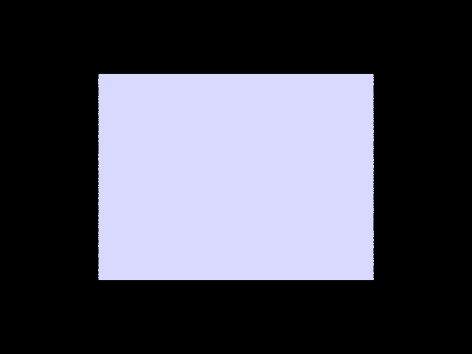
In order to generate the ray, the pipeline starts with the image coordinates (x, y) in Image Space. We created a 3x3 transform based on inverse mapping a set of linear equations from points in the spec (creating matrices for mapping center (0.5,0.5)->(0,0), bottom corner (0,0)->(-tan(0.5*hFov, -tan(0.5*vFov))), etc.). Then, we multipled the ray's x, y to camera space by matrix multiplying with the transform matrix. Finally, we multiply by c2w to change the direction vector to worldspace, and then normalize it. Finally, we create a ray based on the camera pos and calculated direction vector, set the min_t and max_t to nClip and fClip, and then return that ray. From there, we update the pixel in a SampleBuffer with the integral of radiance over the pixel. To make this integral estimation, we loop num_samples number of items, generate a sample, create a newX and newY, which are the translated coordinates of the sample. Then, we sum a vector with all of these values passed into est_radiance_global_illumnation, and return the average vector after updating the samplebuffer pixel. image coords -> ray in world space (generate_ray) -> update pixel in SampleBuffer w/ integral of radiance over pixel
Sphere intersection: The main functionality about ray-sphere intersection was based on the lecture slides 9-21. We are testing if a ray intersects a Sphere by creating float values a, b, c, and temp, where temp = the quadratic formula equation. The first hypothetical ray sphere intersection is at -b + sqrt(...), and the second hypothetical intersection is at -b - sqrt(...); then we assign the inputted double pointers t1 and t2 to the corresponding min(first, second) and max(first, second) respectively, and return true. If the value b^2 - 4ac < 0, then we know that there is no intersection between the ray and sphere, so we return false. If there is an intersection, then we set the Intersection *i data: n (normal) with equation ray's origin + t*ray's direction - center of sphere location (the normalized vector pointing from the sphere center to the intersection point) primitive, bsdf, and t.
In order to do ray-triangle intersection, we used the Moller Trumbore algorithm to calculate E1, E2, S, S1, and S2, essentially the barycentric coordinates of the ray's intersection with the triangle. Based on these values, we output the vector of params [t, b1, and b2]. Finally, we compare that ray's parameterization, t, ensuring many conditions, such as being >= 0, being between min_t and max_t. If these conditions hold, we know that the ray intersects with the triangle. If there is an intersection, we now set the parameters of the ray and the intersection. For the ray, we update its max_t parameter to equal t (the nearest interesction), so that we can limit the space of future interesctions that we check. For the interesction, we update its t value, its normal as a weighted sum of the 3 vertice's normals, the primitive, and the bsdf. Finally, we are able to render the CBempty.dae room, so that the walls and ceiling are existent.
CBspheres:
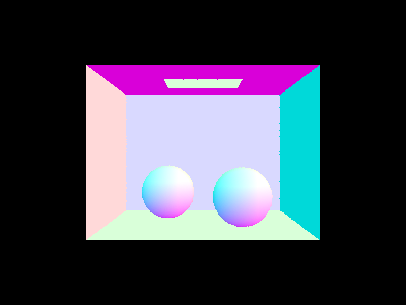
Cube:
plane:
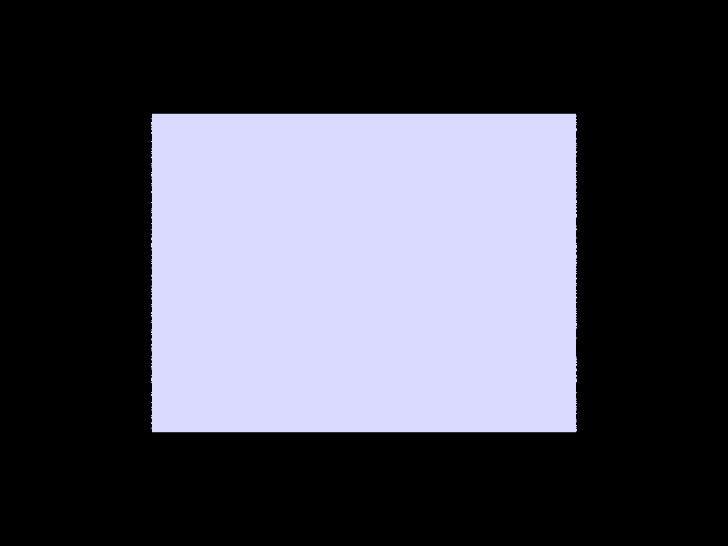
Our BVH construction algorithm started by creating a single BVH node (the root node). THen, we used recursion to build up the tree.
The recursive case was if the count of vector of Primitives was less than the max_leaf_size, then we would set the start and the end of
a BVHnode to that vector's start and end, and return the node. In the recursive case, we first find the best axis to split on by
a simple for loop that increments 3 counters (aboveX, aboveY, and aboveZ) for a Primitive if its x, y, and z centroid coordinates are above
the bounding box's centroid coordinates. Then, we take each counter, and calculate a temp value: aboveX - (total_count - aboveX) for each axis, in order to see
which axis is the most "balanced" (most balanced for us is the temp value closest to 0). Then, we create 2 new vector of Primitive pointers left and right.
For the selected axis, we iterate over the entire inputted vector of Primitives, and assign each Primitive pointer to left if its centroid is less than
the bounding box's center for that axis we chose, and right if its centroied is larger than the bounding box's center for the axis we chose.
The heuristic we chose for picking the spliting point was the axis with the most "even split", as we wanted the left and right split to give us the
most information gain.
One thing we noticed was that we were initially segfaulting, and that was because we didn't handle the case where one of the children nodes remains empty
(left is empty || right is empty). To alleviate this issue of infinite recursion, we checked if either vector is empty, and moved a Primitive from the "full"
side to the empty.
Cow:
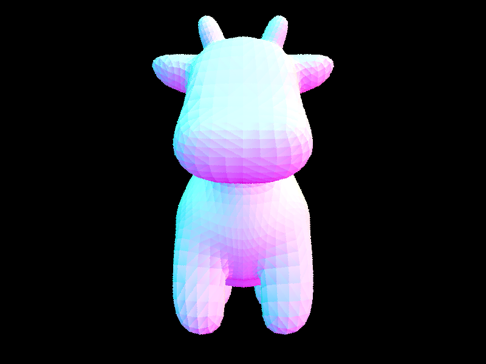
0.03 seconds
maxplanck:
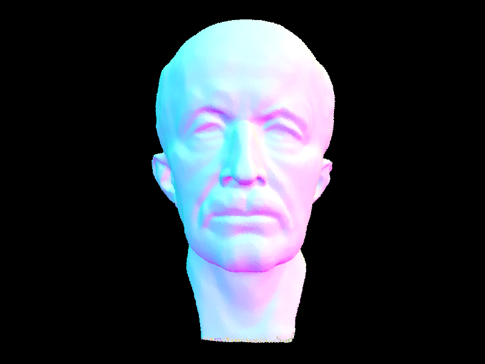
0.3 seconds
lucy:
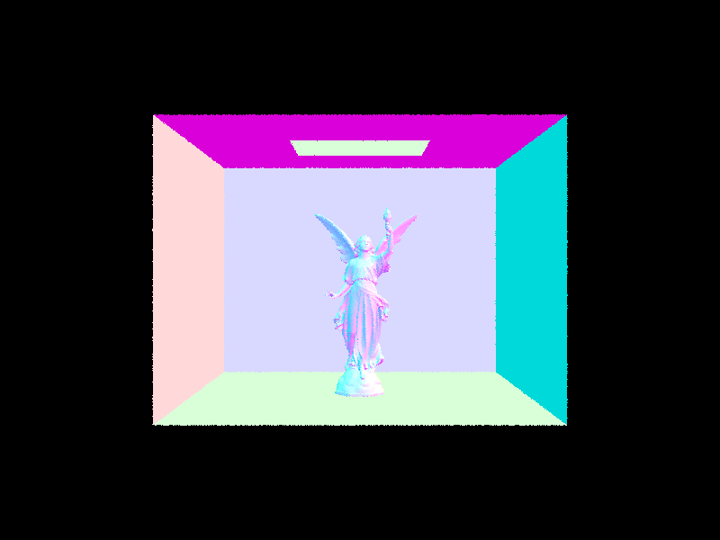
0.1 seconds
With BVH acceleration, it took 0.03 seconds for cow, 0.3 seconds for maxplanck, and 0.1 seconds for lucy.
Without BVH acceleration, it took 5 seconds for cow, 47 seconds for maxplanck, and 232 seconds for lucy.
Clearly, there was a huge difference in the time it took to render with and without BVH acceleration; using BVH acceleration, the cow image rendered
~166 times faster, the maxplanck rendered ~16.6 times faster, and the lucy image rendered ~2320 times faster. Based on our results, this shows that
the BVH acceleration GREATLY helps speedup the rendering of images with many triangles-- for example, the lucy image has hundreds of thousands of triangles,
and the speedup gain from BVH acceleration is greatly bigger than the maxplanck image, which only has tens of thousands of triangles.
Direct Lighting with Uniform Hemisphere Sampling
The first direct lighting function we we implemented was done through uniformly sampling in a hemisphere, following
the Monte Carlo estimator.
To implement this, we sampled num_samples number of times: first getting the emission value of the surface material,
w_i, then getting the output of diffusing lambertian BSDF passing in w_i and w_out. Then, we create a new ray with
direction d = o2w*w_i. If this ray's direction intersects with the bvh of the light source, then we contribute its
new Li value (new intersection's emission value), and fill in the other two constant values cos and pdf of the estimator.
Finally, we add this to our existing sum. If the ray doesn't intersect with the bvh of the light source, we continue.
Finally, we return the runing sum divided by the number of samples (average).
Direct Lighting by Importance Sampling Lights
The second direct lighting function we implemented was importance sampling, meant to sample all points directly, with
the advantage that we can render images with only point lights. For each light source in a scene, we similarily
sample num_samples times: Similarily to hemisphere sampling, we create a new ray, and calculate the
Li emission sample = light->sample_L and the output of f(w_out, w_i) for the Monte Carlo estimator. The difference is that
now, the ray's max_t parameter = the distance from the surface to the light - EPS_F and the ray's direction = w_i (we
set these ray parameters). After creating and setting the new ray's parameters, the rest of the implementation is
essentially the same as hemisphere sampling: check if the ray intersects with the light source BVH, and add to our
running sum. And finally, divide by the number of samples to get the average. Now, the images rendered have less
noise, and the scenes are brighter from point lights.
Uniform Hemisphere Sampling:
CBunny Hemisphere sampling Low sample rate
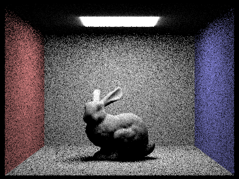
Dragon Hemisphere sampling high sample rate

Coil Hemisphere sampling low sample rate
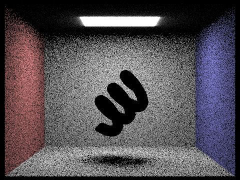
DONE! Gems Importance sampling low sample rate
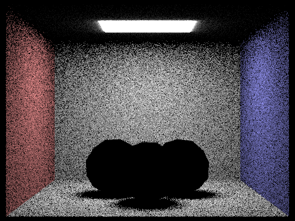
CBunny Importance sampling Low sample rate
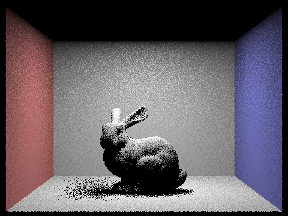
CBunny Importance sampling High sample rate
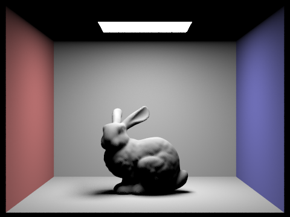
Dragon Importance sampling high sample rate
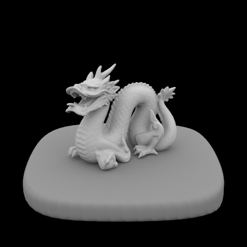
1 light ray:
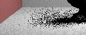
4 light rays:
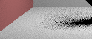
16 light ray:
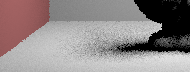
64 light rays:
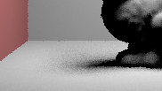
There is much less noise in soft shadows as we increase the amount of light rays used. In low light ray renderings, like with 1 or 4 light rays, there are fewer samples taken to determine the lighting.
Thus, there is obvious gradients of black shadow of light. As we increase the light rays used, like 16 or 64, we can see smoother transitions of indirect lighting effects, leading to accurate shadows.
There is typically more noise in uniform hemisphere sampling than lighting sampling. While both images are noisy, this difference can be apparently seen in CBunny Importance sampling Low sample rate vs. CBunny Hemisphere sampling low sample rate. The hemisphere sampling bunny has way more black pixels spotted around the background of the image. On the other hand, lighting sampling prioritizes biasing significant light sources, which is interesting because the light source is completely blacked out.
For the indirect lighting function, the overall functionality is similar to direct light sampling, we just also recurse to reach more bounce cases. We are using the ray depth (r.depth) as the recursive condition, and the base case is when ray depth is 0, and we decrement ray depth in each recursive call. There's also a separate condition where if isAccumBounces is true/false, and if it's false, we check if ray depth <= maxRayDepth. In the recursive case, we generate a new ray based on a point on the mesh, and sample outgoing rays, getting the lighting from rays that intersect, and dimming them based on distance. We sum each lighting output from each recursive bounce, and return the sum in the end.
Bench direct illumination (1 bounce):
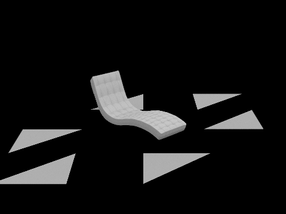
Bench indirect illumination (3 bounce):
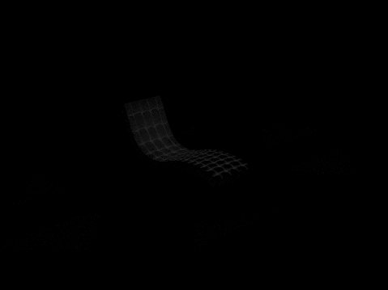
Bench indirect illumination (5 bounce):
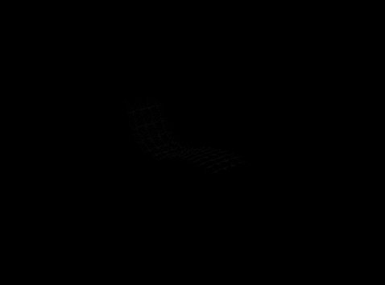
EMpty direct illumination (1 bounce):
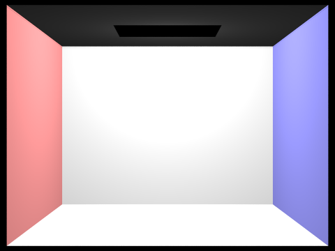
Empty indirect illumination (3 bounce):
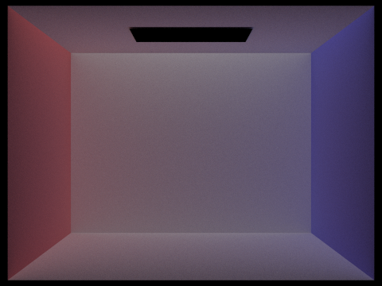
Empty indirect illumination (5 bounce):
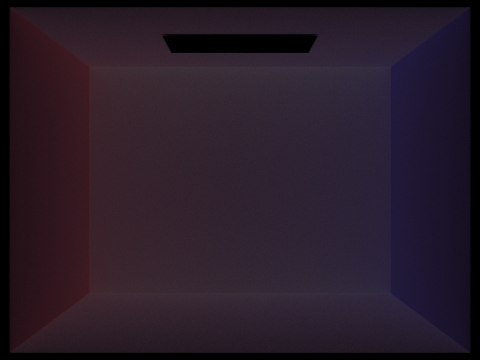
CBSphere direct illumination (1 bounce):
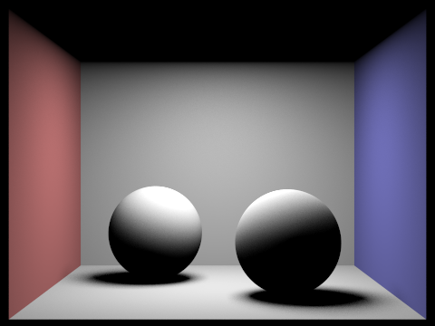
CBSpheres indirect illumination (3 bounce):
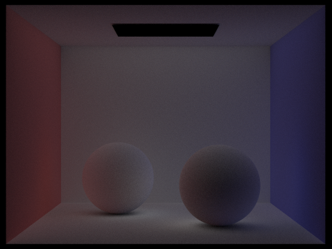
CBSpheres indirect illumination (5 bounce):
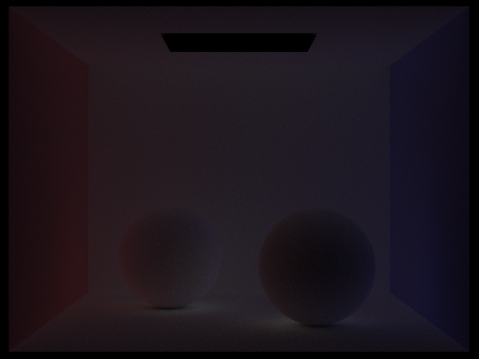
We will compare the scene of direct illumination vs. indirect illumination for CBsphere, using 1024 samples per pixel.
CBSphere direct illumination (1 bounce):
CBSpheres indirect illumination (5 bounce):
Two of the main differences between direct illumination and indirect illumination is that direct illumination has much sharper lighting contrasts and patterns, while indirect illumination has smoother lighting
gradients. We can see in the direct illumination, there's almost 3 light bands on the left sphere (white, grey, black), indicating the sharpness of lighting contrast, whereas the indirect illumination (3 bounces)
doesn't have apparent differences next to one another. Second, indirect illumination adds better light ambiance with the environment, which can be seen where the walls and floor background around the spheres
also aren't as sharply contrasted with the spheres because of the bounces.
0th bounce of light
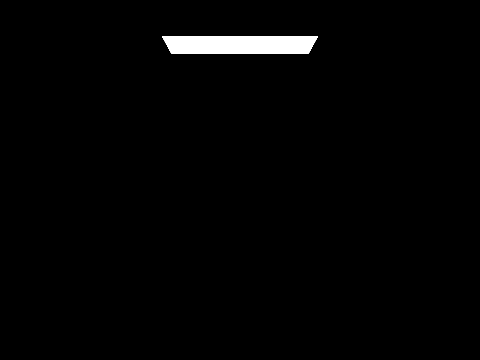
1th bounce of light
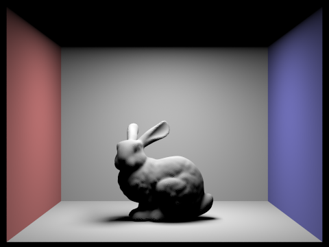
2th bounce of light
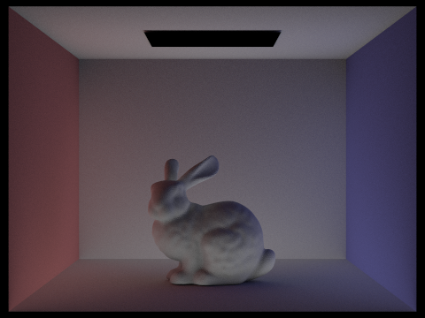
3th bounce of light
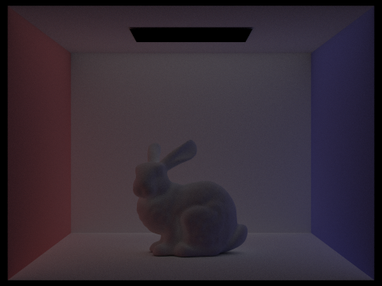
4th bounce of light
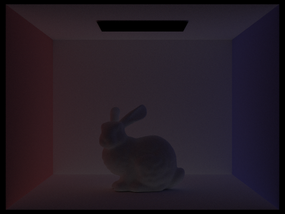
5th bounce of light
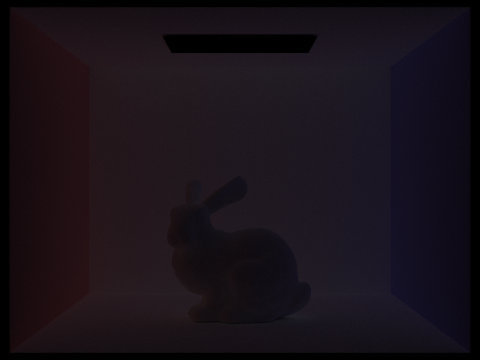
For the 2nd and 3rd bounces of light, it looks like there is light coming from underneath the bunny, and that the bunny's body is glowing, ilke adding color bleeding to the scene. This is because the bunny is reflecting some light off of the wall, and the wall is reflecting some light/color off of the bunny, which adds better color complexity, and decreases noise as compared to rasterization.
0 max ray depth
1 max ray depth
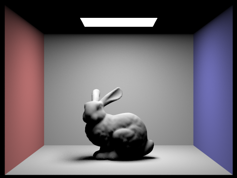
2 max ray depth
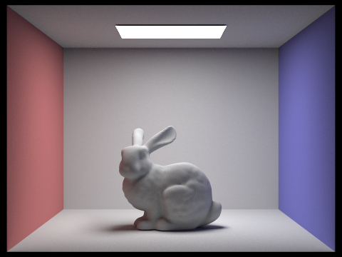
3 max ray depth
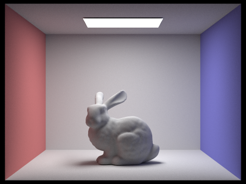
4 max ray depth
5 max ray depth
As we increase the max ray depth, the scene is getting brighter (MORE global illumination
). This makes sense because the ray depth is increasing, so light is bouncing off of surfaces more times with higher ray depth.
Russian Roulette 0 max ray depth
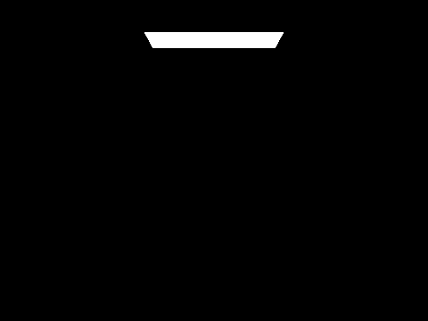
Russian Roulette 1 max ray depth
Russian Roulette 2 max ray depth

Russian Roulette 3 max ray depth
Russian Roulette 4 max ray depth
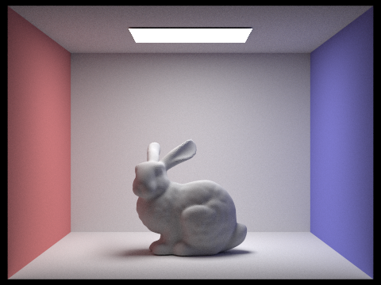
Russian Roulette 100 max ray depth
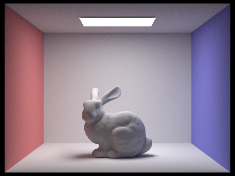
Spheres 0 sample-per-pixel

Spheres 1 sample-per-pixel
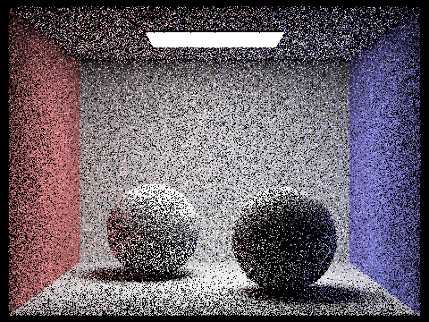
Spheres 2 sample-per-pixel
Spheres 4 sample-per-pixel
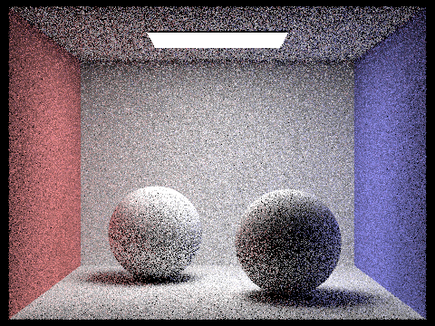
Spheres 8 sample-per-pixel
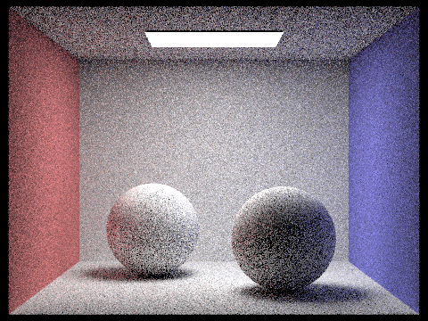
Spheres 16 sample-per-pixel
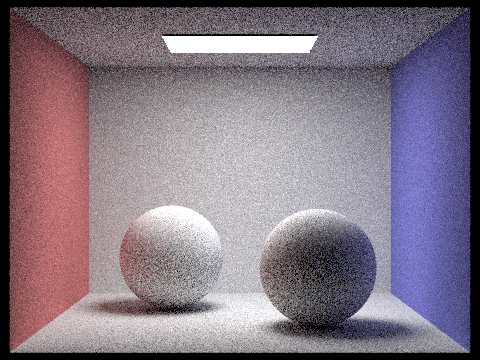
Spheres 64 sample-per-pixel
Spheres 1024 sample-per-pixel
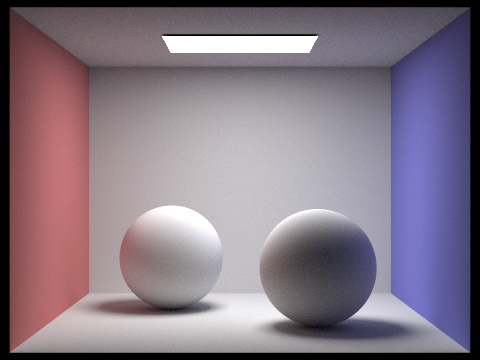
Adaptive sampling is a method used to concentrate samples in harder to render parts of the image, saving computation (high samples) on easier parts of the image to render. Thus, it reduces overall render times by concentrating computate efforts where it's most needed, while still maintaining image quality. In order to implement adaptive sampling.
Overall, it was an enjoyable experience collaborating. Joel and Eric met both in-person and over Zoom multiple times through the homework work cycle to discuss conceptual concepts, pair program, and debug. We both utilized Office hours in Soda as well to get questions answered. Joel carried much of the coding sections, as he had a stronger conceptual understanding of the material, while Eric helped in pieces setting up skeleton code based on the spec and debugging. Eric did the majority of the writeup, with the help of Joel to render some of the images. We learned that starting early is very important, and having a plan and understanding the material before coding can save hours of debugging!